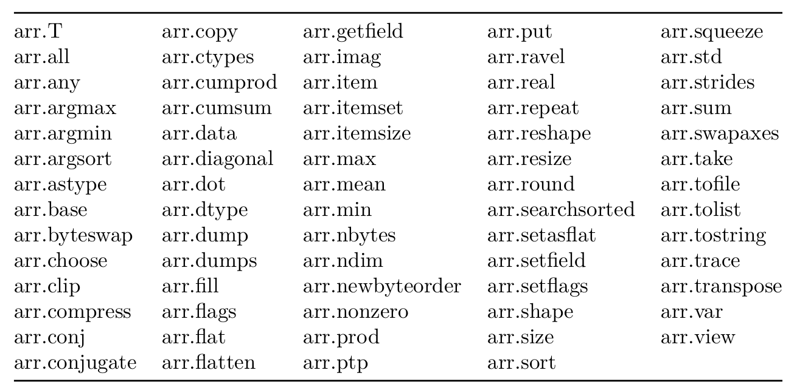
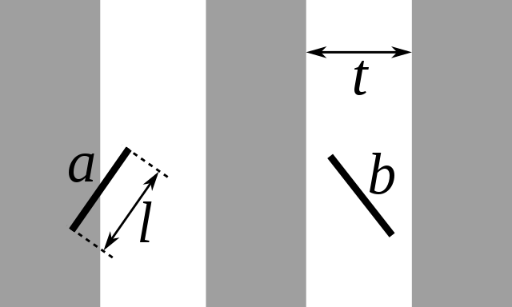

Clase 12: Más información sobre Numpy
Creación y operación sobre Numpy arrays
Vamos a ver algunas características de los arrays de Numpy en un
poco más de detalle
Funciones para crear arrays
Vimos varios métodos que permiten crear e inicializar arrays
import numpy as np
import matplotlib.pyplot as plt
a= {}
a['empty unid'] = np.empty(10) # Creación de un array de 10 elementos
a['zeros unid'] = np.zeros(10) # Creación de un array de 10 elementos inicializados en cero
a['zeros bidi'] = np.zeros((5,2)) # Array bidimensional 10 elementos con *shape* 5x2
a['ones bidi'] = np.ones((5,2)) # Array bidimensional 10 elementos con *shape* 5x2, inicializado en 1
a['arange'] = np.arange(10) # Array inicializado con una secuencia
a['lineal'] = np.linspace(0,10,5) # Array inicializado con una secuencia equiespaciada
a['log'] = np.logspace(0,2,10) # Array inicializado con una secuencia con espaciado logarítmico
a['diag'] = np.diag(np.arange(5)) # Matriz diagonal a partir de un vector
for k,v in a.items():
print('Array {}:\n {}\n'.format(k,v), 80*"*")
Array empty unid: [4.65428126e-310 0.00000000e+000 1.15963727e-152 6.96407512e+252 3.65064455e+180 8.68443543e+199 2.00013433e+174 1.97308763e-153 6.32292149e+180 1.44244886e+214] **************************************************************************** Array zeros unid: [0. 0. 0. 0. 0. 0. 0. 0. 0. 0.] **************************************************************************** Array zeros bidi: [[0. 0.] [0. 0.] [0. 0.] [0. 0.] [0. 0.]] **************************************************************************** Array ones bidi: [[1. 1.] [1. 1.] [1. 1.] [1. 1.] [1. 1.]] **************************************************************************** Array arange: [0 1 2 3 4 5 6 7 8 9] **************************************************************************** Array lineal: [ 0. 2.5 5. 7.5 10. ] **************************************************************************** Array log: [ 1. 1.66810054 2.7825594 4.64158883 7.74263683 12.91549665 21.5443469 35.93813664 59.94842503 100. ] **************************************************************************** Array diag: [[0 0 0 0 0] [0 1 0 0 0] [0 0 2 0 0] [0 0 0 3 0] [0 0 0 0 4]] ****************************************************************************
Funciones que actúan sobre arrays
Numpy incluye muchas funciones matemáticas que actúan sobre arrays completos (de una o más dimensiones). La lista completa se encuentra en la documentación e incluye:
x = np.linspace(np.pi/180, np.pi,7)
y = np.geomspace(10,100,7)
print(x)
print(y)
print(x+y) # Suma elemento a elemento
print(x*y) # Multiplicación elemento a elemento
print(y/x) # División elemento a elemento
print(x//2) # División entera elemento a elemento
[0.01745329 0.53814319 1.05883308 1.57952297 2.10021287 2.62090276
3.14159265]
[ 10. 14.67799268 21.5443469 31.6227766 46.41588834
68.12920691 100. ]
[ 10.01745329 15.21613586 22.60317998 33.20229957 48.5161012
70.75010967 103.14159265]
[1.74532925e-01 7.89886174e+00 2.28118672e+01 4.99489021e+01
9.74832459e+01 1.78560026e+02 3.14159265e+02]
[572.95779513 27.27525509 20.34725522 20.02046006 22.10056375
25.99455727 31.83098862]
[0. 0. 0. 0. 1. 1. 1.]
print('x =', x)
print('square\n', x**2) # potencias
print('sin\n',np.sin(x)) # Seno (np.cos, np.tan)
print("tanh\n",np.tanh(x)) # tang hiperb (np.sinh, np.cosh)
print('exp\n', np.exp(-x)) # exponenciales
print('log\n', np.log(x)) # logaritmo en base e (np.log10)
print('abs\n',np.absolute(x)) # Valor absoluto
print('resto\n', np.remainder(x,2)) # Resto
x = [0.01745329 0.53814319 1.05883308 1.57952297 2.10021287 2.62090276
3.14159265]
square
[3.04617420e-04 2.89598089e-01 1.12112749e+00 2.49489282e+00
4.41089408e+00 6.86913128e+00 9.86960440e+00]
sin
[1.74524064e-02 5.12542501e-01 8.71784414e-01 9.99961923e-01
8.63101882e-01 4.97478722e-01 1.22464680e-16]
tanh
[0.01745152 0.49158114 0.78521683 0.91852736 0.97046433 0.9894743
0.99627208]
exp
[0.98269813 0.58383131 0.34686033 0.20607338 0.12243036 0.07273717
0.04321392]
log
[-4.04822697 -0.61963061 0.05716743 0.45712289 0.7420387 0.96351882
1.14472989]
abs
[0.01745329 0.53814319 1.05883308 1.57952297 2.10021287 2.62090276
3.14159265]
resto
[0.01745329 0.53814319 1.05883308 1.57952297 0.10021287 0.62090276
1.14159265]
x % 2
array([0.01745329, 0.53814319, 1.05883308, 1.57952297, 0.10021287,
0.62090276, 1.14159265])
Productos entre arrays y productos vectoriales
# Creamos arrays unidimensionales (vectores) y bidimensionales (matrices)
v1 = np.array([2, 3, 4])
v2 = np.array([1, 1, 1])
v3 = np.array([1+2j, 1, 1])
A = np.arange(1,13,2).reshape(2, 3)
B = np.linspace(0.5,11.5,12).reshape(3, 4)
print(A)
[[ 1 3 5]
[ 7 9 11]]
print(B)
[[ 0.5 1.5 2.5 3.5]
[ 4.5 5.5 6.5 7.5]
[ 8.5 9.5 10.5 11.5]]
print(v1*v2)
[2 3 4]
print(A*v1)
[[ 2 9 20]
[14 27 44]]
try:
print(A*B)
except ValueError as e:
print(e)
operands could not be broadcast together with shapes (2,3) (3,4)
Los productos se realizan “elemento a elemento”, si queremos obtener “productos internos” o productos entre matrices (o matrices y vectores)
print(v1, '.', v2, '=', np.dot(v1, v2))
[2 3 4] . [1 1 1] = 9
print(v1, '.', v2, '=', np.matmul(v1, v2))
[2 3 4] . [1 1 1] = 9
print( A, 'x', v1, '=', np.dot(A, v1))
[[ 1 3 5]
[ 7 9 11]] x [2 3 4] = [31 85]
print(A.shape, B.shape)
(2, 3) (3, 4)
print( A, 'x', B, '=', np.matmul(A, B)) # Equivalente a np.dot
[[ 1 3 5]
[ 7 9 11]] x [[ 0.5 1.5 2.5 3.5]
[ 4.5 5.5 6.5 7.5]
[ 8.5 9.5 10.5 11.5]] = [[ 56.5 65.5 74.5 83.5]
[137.5 164.5 191.5 218.5]]
Producto interno vectorial en complejos, conjugando el primer factor
print( v3, 'x', v1, '=', np.dot(v3, v1))
[1.+2.j 1.+0.j 1.+0.j] x [2 3 4] = (9+4j)
print( v3, 'x', v1, '=', np.vdot(v3, v1))
[1.+2.j 1.+0.j 1.+0.j] x [2 3 4] = (9-4j)
Además, el módulo numpy.linalg incluye otras funcionalidades como determinantes, normas, determinación de autovalores y autovectores, descomposiciones, etc.
Comparaciones entre arrays
La comparación, como las operaciones y aplicación de funciones se realiza “elemento a elemento”.
Funciones |
Operadores |
|---|---|
greater(x1, x2, /[, out, where, casting, …]) |
(x1 > x2) |
greater_equal(x1, x2, /[, out, where, …]) |
(x1 >= x2) |
less(x1, x2, /[, out, where, casting, …]) |
(x1 < x2) |
less_equal(x1, x2, /[, out, where, casting, …]) |
(x1 =< x2) |
not_equal(x1, x2, /[, out, where, casting, …]) |
(x1 != x2) |
equal(x1, x2, /[, out, where, casting, …]) |
(x1 == x2) |
z = np.array((-1,3,4,0.5,2,9,0.7))
print(x)
print(y)
print(z)
[0.01745329 0.53814319 1.05883308 1.57952297 2.10021287 2.62090276
3.14159265]
[ 10. 14.67799268 21.5443469 31.6227766 46.41588834
68.12920691 100. ]
[-1. 3. 4. 0.5 2. 9. 0.7]
c1 = x <= z
c2 = np.less_equal(z,y)
c3 = np.less_equal(x,y)
print(c1)
print(c2)
print(c3)
[False True True False False True False]
[ True True True True True True True]
[ True True True True True True True]
c1 # Veamos que tipo de array es:
array([False, True, True, False, False, True, False])
np.sum(c1), np.sum(c2), c3.sum()
(3, 7, 7)
Como vemos, las comparaciones nos dan un vector de variables lógicas.
Cuando queremos combinar condiciones no funciona usar las palabras
and y or de Python porque estaríamos comparando los dos
elementos (arrays completos).
print(np.logical_and(c1, c2))
print(c1 & c2)
print(np.logical_and(c2, c3))
print(c2 & c3)
[False True True False False True False]
[False True True False False True False]
[ True True True True True True True]
[ True True True True True True True]
print(np.logical_or(c1, c2))
print(c1 | c2)
print(np.logical_or(c2, c3))
print(c2 | c3)
[ True True True True True True True]
[ True True True True True True True]
[ True True True True True True True]
[ True True True True True True True]
print(np.logical_xor(c1, c2))
print(np.logical_xor(c2, c3))
[ True False False True True False True]
[False False False False False False False]
Copias de arrays y vistas
Para poder controlar el uso de memoria y su optimización, Numpy no
siempre crea un nuevo vector al realizar operaciones. Por ejemplo cuando
seleccionamos una parte de un array usando la notación con “:”
(slicing) devuelve algo que parece un nuevo array pero que en realidad
es una nueva vista del mismo array. Lo mismo ocurre con el método
reshape()
x0 = np.linspace(1,24,24)
print(x0)
[ 1. 2. 3. 4. 5. 6. 7. 8. 9. 10. 11. 12. 13. 14. 15. 16. 17. 18.
19. 20. 21. 22. 23. 24.]
y0 = x0[::2]
print(y0)
[ 1. 3. 5. 7. 9. 11. 13. 15. 17. 19. 21. 23.]
El atributo base nos da acceso al objeto que tiene los datos. Por
ejemplo, en este caso:
print(x0.base)
[ 1. 2. 3. 4. 5. 6. 7. 8. 9. 10. 11. 12. 13. 14. 15. 16. 17. 18.
19. 20. 21. 22. 23. 24.]
print(y0.base)
[ 1. 2. 3. 4. 5. 6. 7. 8. 9. 10. 11. 12. 13. 14. 15. 16. 17. 18.
19. 20. 21. 22. 23. 24.]
y0.base is x0.base
True
type(x0), type(y0)
(numpy.ndarray, numpy.ndarray)
y0.size, x0.size
(12, 24)
y0[1] = -1
print(x0)
[ 1. 2. -1. 4. 5. 6. 7. 8. 9. 10. 11. 12. 13. 14. 15. 16. 17. 18.
19. 20. 21. 22. 23. 24.]
x0.base
array([ 1., 2., -1., 4., 5., 6., 7., 8., 9., 10., 11., 12., 13.,
14., 15., 16., 17., 18., 19., 20., 21., 22., 23., 24.])
x0.strides, y0.strides
((8,), (16,))
En este ejemplo, el array y0 está basado en x0, o –lo que es lo
mismo– el objeto base de y0 es x0. Por lo tanto, al modificar
uno, se modifica el otro.
Las funciones reshape y transpose también devuelven vistas
del array original en lugar de una nueva copia
x0 = np.linspace(1,24,24)
print(x0)
x1 = x0.reshape(6,-1)
[ 1. 2. 3. 4. 5. 6. 7. 8. 9. 10. 11. 12. 13. 14. 15. 16. 17. 18.
19. 20. 21. 22. 23. 24.]
print(x1)
[[ 1. 2. 3. 4.]
[ 5. 6. 7. 8.]
[ 9. 10. 11. 12.]
[13. 14. 15. 16.]
[17. 18. 19. 20.]
[21. 22. 23. 24.]]
print(x1.base is x0.base)
True
x2 = x1.transpose()
print(x2.base is x0.base)
True
x2
array([[ 1., 5., 9., 13., 17., 21.],
[ 2., 6., 10., 14., 18., 22.],
[ 3., 7., 11., 15., 19., 23.],
[ 4., 8., 12., 16., 20., 24.]])
x2.strides, x1.strides
((8, 32), (32, 8))
Las “vistas” son referencias al mismo conjunto de datos, pero la
información respecto al objeto puede ser diferente. Por ejemplo en el
anterior x0, x1 y x son diferentes objetos pero con los
mismos datos (no sólo iguales)
Los datos en los tres objetos están compartidos:
print('original')
print('x2 =',x2)
x0[-1] =-1
print('x0 =',x0)
original
x2 = [[ 1. 5. 9. 13. 17. 21.]
[ 2. 6. 10. 14. 18. 22.]
[ 3. 7. 11. 15. 19. 23.]
[ 4. 8. 12. 16. 20. 24.]]
x0 = [ 1. 2. 3. 4. 5. 6. 7. 8. 9. 10. 11. 12. 13. 14. 15. 16. 17. 18.
19. 20. 21. 22. 23. -1.]
print('cambiado')
print('x2 =',x2)
cambiado
x2 = [[ 1. 5. 9. 13. 17. 21.]
[ 2. 6. 10. 14. 18. 22.]
[ 3. 7. 11. 15. 19. 23.]
[ 4. 8. 12. 16. 20. -1.]]
print('x1 =',x1)
x1 = [[ 1. 2. 3. 4.]
[ 5. 6. 7. 8.]
[ 9. 10. 11. 12.]
[13. 14. 15. 16.]
[17. 18. 19. 20.]
[21. 22. 23. -1.]]
Atributos de arrays
Los array tienen otras propiedades, que pueden explorarse apretando
<TAB> en una terminal o notebook de IPython o leyendo la
documentación de Numpy, o
utilizando la función dir(arr) (donde arr es una variable del
tipo array) o dir(np.ndarray).
En la tabla se muestra una lista de los atributos de los numpy array
Exploremos algunas de ellas
reshape
arr= np.arange(12) # Vector
print("Vector original:\n", arr)
print(arr.shape)
arr2= arr.reshape((3,4)) # Le cambiamos la forma a matriz de 3x4
print("Cambiando la forma a 3x4:\n", arr2)
print(arr2.shape)
arr3= np.reshape(arr,(4,3)) # Le cambiamos la forma a matriz de 4x3
print("Cambiando la forma a 4x3:\n", arr3)
Vector original:
[ 0 1 2 3 4 5 6 7 8 9 10 11]
(12,)
Cambiando la forma a 3x4:
[[ 0 1 2 3]
[ 4 5 6 7]
[ 8 9 10 11]]
(3, 4)
Cambiando la forma a 4x3:
[[ 0 1 2]
[ 3 4 5]
[ 6 7 8]
[ 9 10 11]]
arr is arr2
False
try:
arr.reshape((3,3)) # Si la nueva forma no es adecuada, falla
except ValueError as e:
print("Error: la nueva forma es incompatible:", e)
Error: la nueva forma es incompatible: cannot reshape array of size 12 into shape (3,3)
transpose
print('Transpose:\n', arr2.T)
print('Transpose:\n', arr2.transpose())
print('Transpose:\n', np.transpose(arr2))
Transpose:
[[ 0 4 8]
[ 1 5 9]
[ 2 6 10]
[ 3 7 11]]
Transpose:
[[ 0 4 8]
[ 1 5 9]
[ 2 6 10]
[ 3 7 11]]
Transpose:
[[ 0 4 8]
[ 1 5 9]
[ 2 6 10]
[ 3 7 11]]
temp1 = arr2.T
temp2 = np.transpose(arr2)
print(temp1.base is temp2.base)
print(temp1.base is arr2.base)
True
True
min, max
Las funciones para encontrar mínimo y máximo pueden aplicarse tanto a vectores como a arrays` con más dimensiones. En este último caso puede elegirse si se trabaja sobre uno de los ejes:
print(arr2)
print(np.max(arr2))
print(np.max(arr2,axis=0))
print(np.max(arr2,axis=1))
[[ 0 1 2 3]
[ 4 5 6 7]
[ 8 9 10 11]]
11
[ 8 9 10 11]
[ 3 7 11]
np.max(arr2[1,:])
7
El primer eje (axis=0) corresponde a las columnas (convención del
lenguaje C), y por lo tanto dará un valor por cada columna.
Si no damos el argumento opcional axis ambas funciones nos darán el
mínimo o máximo de todos los elementos. Si le damos un eje nos devolverá
el mínimo a lo largo de ese eje.
argmin, argmax
Estas funciones trabajan de la misma manera que min y max pero
devuelve los índices en lugar de los valores.
print(np.argmax(arr2))
print(np.argmax(arr2,axis=0))
print(np.argmax(arr2,axis=1))
11
[2 2 2 2]
[3 3 3]
sum, prod, mean, std
print(arr2)
print('sum', np.sum(arr2))
print('sum, 0', np.sum(arr2,axis=0))
print('sum, 1', np.sum(arr2,axis=1))
[[ 0 1 2 3]
[ 4 5 6 7]
[ 8 9 10 11]]
sum 66
sum, 0 [12 15 18 21]
sum, 1 [ 6 22 38]
print(np.prod(arr2))
print(np.prod(arr2,axis=0))
print(np.prod(arr2,axis=1))
0
[ 0 45 120 231]
[ 0 840 7920]
print(arr2.mean(), '=', arr2.sum()/arr2.size)
print(np.mean(arr2,axis=0))
print(np.mean(arr2,axis=1))
print(np.std(arr2))
print(np.std(arr2,axis=1))
5.5 = 5.5
[4. 5. 6. 7.]
[1.5 5.5 9.5]
3.452052529534663
[1.11803399 1.11803399 1.11803399]
cumsum, cumprod, trapz
Las funciones cumsum y cumprod devuelven la suma y producto
acumulativo recorriendo el array, opcionalmente a lo largo de un eje
print(arr2)
[[ 0 1 2 3]
[ 4 5 6 7]
[ 8 9 10 11]]
# Suma todos los elementos anteriores y devuelve el array unidimensional
print(arr2.cumsum())
[ 0 1 3 6 10 15 21 28 36 45 55 66]
# Para cada columna, en cada posición suma los elementos anteriores
print(arr2.cumsum(axis=0))
[[ 0 1 2 3]
[ 4 6 8 10]
[12 15 18 21]]
# En cada fila, el valor es la suma de todos los elementos anteriores de la fila
print(arr2.cumsum(axis=1))
[[ 0 1 3 6]
[ 4 9 15 22]
[ 8 17 27 38]]
arr2
array([[ 0, 1, 2, 3],
[ 4, 5, 6, 7],
[ 8, 9, 10, 11]])
# Igual que antes pero con el producto
print(arr2.cumprod(axis=0))
[[ 0 1 2 3]
[ 0 5 12 21]
[ 0 45 120 231]]
La función trapz evalúa la integral a lo largo de un eje, usando la regla de los trapecios (la misma que nosotros programamos en un ejercicio)
print(np.trapz(arr2,axis=0))
print(np.trapz(arr2,axis=1))
[ 8. 10. 12. 14.]
[ 4.5 16.5 28.5]
# el valor por default de axis es -1
print(np.trapz(arr2))
[ 4.5 16.5 28.5]
nonzero
Devuelve una tupla de arrays, una por dimensión, que contiene los índices de los elementos no nulos
# El método copy() crea un nuevo array con los mismos valores que el original
arr4 = arr2.copy()
arr4[1,:2] = arr4[2,2:] = 0
arr4
array([[0, 1, 2, 3],
[0, 0, 6, 7],
[8, 9, 0, 0]])
# Vemos que arr2 no se modifica al modificar arr4.
arr2
array([[ 0, 1, 2, 3],
[ 4, 5, 6, 7],
[ 8, 9, 10, 11]])
np.nonzero(arr4)
(array([0, 0, 0, 1, 1, 2, 2]), array([1, 2, 3, 2, 3, 0, 1]))
np.transpose(arr4.nonzero())
array([[0, 1],
[0, 2],
[0, 3],
[1, 2],
[1, 3],
[2, 0],
[2, 1]])
arr4[arr4.nonzero()]
array([1, 2, 3, 6, 7, 8, 9])
arr4
array([[0, 1, 2, 3],
[0, 0, 6, 7],
[8, 9, 0, 0]])
Conveniencias con arrays
Convertir un array a unidimensional (ravel)
a = np.array([[1,2],[3,4]])
print(a)
[[1 2]
[3 4]]
b= np.ravel(a)
print(a.shape, b.shape)
print(b)
(2, 2) (4,)
[1 2 3 4]
b.base is a
True
ravel tiene un argumento opcional ‘order’
np.ravel(a, order='C') # order='C' es el default
array([1, 2, 3, 4])
np.ravel(a, order='F')
array([1, 3, 2, 4])
El método flatten hace algo muy parecido a ravel, la diferencia
es que flatten siempre crea una nueva copia del array, mientras que
ravel puede devolver una nueva vista del mismo array.
a.flatten()
array([1, 2, 3, 4])
Enumerate para ndarrays
Para iterables en Python existe la función enumerate que devuelve
una tupla con el índice y el valor. En Numpy existe un iterador
multidimensional llamado ndenumerate()
print(arr2)
for (i,j), x in np.ndenumerate(arr2):
print(f'x[{i},{j}]-> {x}')
Vectorización de funciones escalares
Si bien en Numpy las funciones están vectorizadas, hay ocasiones en
que las funciones son el resultado de una simulación, optimización,
integración u otro cálculo complejo, y si bien la paralelización puede
ser trivial, el cálculo debe ser realizado para cada valor de algún
parámetro y no puede ser realizado directamente con un vector. Para ello
existe la función vectorize(). Veamos un ejemplo, calculando la
función coseno() como la integral del seno()
def my_trapz(f, a, b):
x = np.linspace(a,b,100)
y = f(x)
return ((y[1:]+y[:-1])*(x[1:]-x[:-1])).sum()/2
def mi_cos(t):
return 1-my_trapz(np.sin, 0, t)
mi_cos(np.pi/4)
que se compara bastante bien con el valor esperado del coseno:
np.cos(np.pi/4)
Para calcular sobre un conjunto de datos:
x = np.linspace(0,np.pi,30)
print(mi_cos(x))
Obtuvimos un valor único que claramente no puede ser el coseno de ningún ángulo. Si calculamos el coseno con el mismo argumento (vectorial) obtenemos un vector de valores como se espera:
print(np.cos(x))
Si el cálculo fuera más complejo y no tuviéramos la posibilidad de realizarlo en forma vectorial, debemos realizar una iteración llamando a esta función en cada paso:
y = []
for xx in x:
y.append(mi_cos(xx))
print(np.array(y))
y = np.zeros(x.size)
for i,xx in enumerate(x):
y[i] = mi_cos(xx)
plt.plot(x,y)
Como conveniencia, para evitar tener que hacer explícitamente el bucle
for existe la función vectorize, que toma como argumento a una
función que toma y devuelve escalares, y retorna una función equivalente
que acepta arrays:
coseno = np.vectorize(mi_cos)
plt.plot(x, coseno(x), '-')
Ejercicios 12 (a)
Escribir una función
mas_cercano(a, x)que tome dos argumentos: un arrayay un escalarx, y devuelva el número deamás cercano ax. Utilice los métodos discutidos.Pruebe la función con un array
ade números, creado usando:a = np.random.uniform(size=100)
y un valor
x=0.5.Cree una función que calcule la posición y velocidad de una partícula en caída libre para condiciones iniciales dadas (\(h_{0}\), \(v_{0}\)), y un valor de gravedad dados. Se utilizará la convención de que alturas y velocidades positivas corresponden a vectores apuntando hacia arriba (una velocidad positiva significa que la partícula se aleja de la tierra).
La función debe realizar el cálculo de la velocidad y altura para un conjunto de tiempos equiespaciados.
Los valores de velocidad inicial, altura inicial, valor de gravedad, y número de puntos deben ser argumentos de la función con valores por defecto adecuadamente provistos.
La tabla de valores debe darse hasta que la partícula toca el piso (valor \(h=0\)).
Guarde los resultados en tres columnas (t, v(t), h(t)) en un archivo de nombre “caida_vel_alt.dat”
donde “vel” corresponde al valor de la velocidad inicial y “alt” al de la altura inicial.
Realice tres gráficos, mostrando:
altura como función del tiempo (altura en el eje vertical y tiempo en el horizontal)
velocidad como función del tiempo
altura como función de la velocidad
Queremos realizar numéricamente la integral
\[\int_{a}^{b}f(x)dx\]utilizando el método de los trapecios. Para eso partimos el intervalo \([a,b]\) en \(N\) subintervalos y aproximamos la curva en cada subintervalo por una recta

La línea azul representa la función \(f(x)\) y la línea roja la interpolación por una recta (figura de https://en.wikipedia.org/wiki/Trapezoidal_rule)
Si llamamos \(x_{i}\) (\(i=0,\ldots,n,\) con \(x_{0}=a\) y \(x_{n}=b\)) los puntos equiespaciados, entonces queda
En todos los casos utilice arrays y operaciones entre arrays para realizar las siguientes funciones
Escriba una función
trapz(x, y)que reciba dos arrays unidimensionalesxeyy aplique la fórmula de los trapecios.Escriba una función
trapzf(f, a, b, npts=100)que recibe una funciónf, los límitesa,by el número de puntos a utilizarnpts, y devuelve el valor de la integral por trapecios.Escriba una función que calcule la integral logarítmica de Euler:
\[\mathrm{Li}(t) = \int_2^t \frac{1}{\ln x} dx\]usando la función ´trapzf´ para valores de
npts=10, 20, 30, 40, 50, 60Grafique las curvas obtenidas en el punto precedente para valores equiespaciados de \(t\) entre 2 y 10.
Indexado avanzado
Indexado con secuencias de índices
Consideremos un vector simple, y elijamos algunos de sus elementos
x = np.linspace(0,3,7)
x
# Standard slicing
v1=x[1::2]
v1
Esta es la manera simple de seleccionar elementos de un array, y como vimos lo que se obtiene es una vista del mismo array. Numpy permite además seleccionar partes de un array usando otro array de índices:
# Array Slicing con índices ind
i1 = np.array([1,3,-1,0])
v2 = x[i1]
print(x)
print(x[i1])
print(v1.base is x.base)
print(v2.base is x.base)
x[[1,2,-1]]
Los índices negativos funcionan en exactamente la misma manera que en el caso simple.
Es importante notar que cuando se usan arrays como índices, lo que se
obtiene es un nuevo array (no una vista), y este nuevo array tiene las
dimensiones (shape) del array de índices
i2 = np.array([[1,0],[2,1]])
v3= x[i2]
print(x)
print(v3)
print('x shape:', x.shape)
print('v3 shape:', v3.shape)
Índices de arrays multidimensionales
y = np.arange(12,0,-1).reshape(3,4)+0.5
y
print(y[0]) # Primera fila
print(y[2]) # Última fila
i = np.array([0,2])
print(y[i]) # Primera y última fila
Si usamos más de un array de índices para seleccionar elementos de un
array multidimensional, cada array de índices se refiere a una dimensión
diferente. Consideremos el array y
print(y)
Si queremos elegir los elementos en los lugares
[0,1], [1,2], [0,3], [1,1] (en ese orden) podemos crear dos array de
índices con los valores correspondientes a cada dimensión
i = np.array([0,1,0,1])
j = np.array([1,2,3,1])
print(y[i,j])
Indexado con condiciones
Además de usar notación de slices, e índices también podemos
seleccionar partes de arrays usando una matriz de condiciones. Primero
creamos una matriz de coniciones c
c = False*np.empty((3,4), dtype='bool')
print(c)
# Es necesario dar el tipo de los elementos para que sean lógicos
False*np.empty((3,4))
c[i,j]= True # Aplico la notación de índice avanzado
print(c)
y
Como vemos, c es una matriz con la misma forma que y. Esto
permite seleccionar los valores donde el array de condiciones es
verdadero:
yy = y[c]
yy
yy[0]=-2
print(y)
Esta es una notación potente. Por ejemplo, si en el array anterior queremos seleccionar todos los valores que sobrepasan cierto umbral (por ejemplo, los valores mayores a 7)
print(y)
c1 = (y > 7)
print(c1)
El resultado de una comparación es un array donde cada elemento es un
variable lógica (True o False). Podemos utilizarlo para
seleccionar los valores que cumplen la condición dada. Por ejemplo
y[c1]
De la misma manera, si queremos todos los valores entre 4 y 7 (incluidos), podemos hacer
y[ (y >= 4) & (y <= 7) ]
Como mostramos en este ejemplo, no es necesario crear la matriz de condiciones previamente.
Numpy tiene funciones especiales para analizar datos de array que
sirven para quedarse con los valores que cumplen ciertas condiciones. La
función nonzero devuelve los índices donde el argumento no se anula:
c1 = (y>=4) & (y <=7)
np.nonzero(c1)
Esta es la notación de avanzada de índices, y nos dice que los elementos
cuya condición es diferente de cero (True) están en las posiciones:
[1,2], [1,3], [2,0].
indx, indy = np.nonzero(c1)
print('indx =', indx)
print('indy =', indy)
for i,j in zip(indx, indy):
print('y[{},{}]={}'.format(i,j,y[i,j]))
print(np.nonzero(c1))
print(np.transpose(np.nonzero(c1)))
print(y[np.nonzero(c1)])
El resultado de nonzero() se puede utilizar directamente para elegir
los elementos con la notación de índices avanzados, y su transpuesta es
un array donde cada elemento es un índice donde no se anula.
Existe la función np.argwhere() que es lo mismo que
np.transpose(np.nonzero(a)).
Otra función que sirve para elegir elementos basados en alguna condición
es np.compress(condition, a, axis=None, out=None) que acepta un
array unidimensional como condición
c2 = np.ravel(c1)
print(c1)
print(c2)
print(y)
print(np.compress(c2,y))
c3 = np.array(c2, dtype='int32')
c3
np.compress(c3 != 0,y)
La función extract es equivalente a convertir los dos vectores
(condición y datos) a una dimensión (ravel) y luego aplicar
compress
np.extract(c1, y)
print(y[c1])
Función where
La función where permite operar condicionalmente sobre algunos
elementos. Por ejemplo, si queremos convolucionar el vector y con un
escalón localizado en la región [2,8]:
yy = np.where((y > 2) & (y < 8) , y, 0)
yy
Por ejemplo, para implementar la función de Heaviside
import matplotlib.pyplot as plt
def H(x):
return np.where(x < 0, 0, 1)
x = np.linspace(-1,1,11)
H(x)
plt.plot(x,H(x), 'o')
Extensión de las dimensiones (Broadcasting)
Vimos que en Numpy las operaciones (y comparaciones) se realizan
“elemento a elemento”. Sin embargo usamos expresiones del tipo y > 4
donde comparamos un ndarray con un escalar. En este caso, lo que
hace Numpy es extender automáticamente el escalar a un array de las
mismas dimensiones que y
4 -> 4*np.ones(y.shape)
Hagamos esto explícitamente
y
y4 = 4*np.ones(y.shape)
np.all((y > y4) == (y > 4)) # np.all devuelve True si **TODOS** los elementos son iguales
De la misma manera, hay veces que podemos operar sobre arrays de distintas dimensiones
y4
y + y4
y + 4
Como vemos eso es igual a y + 4*np.ones(y.shape). En general, si
Numpy puede transformar los arreglos para que todos tengan el mismo
tamaño, lo hará en forma automática.
Las reglas de la extensión automática son:
La extensión se realiza por dimensión. Dos dimensiones son compatibles si son iguales o una de ellas es 1.
Si los dos
arraysdifieren en el número de dimensiones, el que tiene menor dimensión se llena con1(unos) en el primer eje.
Veamos algunos ejemplos:
x = np.arange(0,40,10)
xx = x.reshape(4,1)
y = np.arange(3)
print(x.shape, xx.shape, y.shape)
print(xx)
print(y)
print(xx+y)
Lo que está pasando es algo así como:
xx -> xxx
y -> yyy
xx + y -> xxx + yyy
donde xxx, yyy son versiones extendidas de los vectores
originales:
xxx = np.tile(xx, (1, y.size))
yyy = np.tile(y, (xx.size, 1))
print(xxx)
print(yyy)
print(xxx + yyy)
Unir (o concatenar) arrays
Si queremos unir dos arrays para formar un tercer array Numpy
tiene una función llamada concatenate, que recibe una secuencia de
arrays y devuelve su unión a lo largo de un eje.
Apilamiento vertical
a = np.array([[1, 2], [3, 4]])
b = np.array([[5, 6], [7, 8], [9,10]])
print('a=\n',a)
print('b=\n',b)
# El eje 0 es el primero, y corresponde a apilamiento vertical
np.concatenate((a, b), axis=0)
np.concatenate((a, b)) # axis=0 es el default
np.vstack((a, b)) # Une siempre verticalmente (primer eje)
np.stack((a,a))
Veamos cómo utilizar esto cuando tenemos más dimensiones.
c = np.array([[[1, 2], [3, 4]],[[-1,-2],[-3,-4]]])
d = np.array([[[5, 6], [7, 8]], [[9,10], [-5, -6]], [[-7, -8], [-9,-10]]])
print('c: shape={}\n'.format(c.shape),c)
print('\nd: shape={}\n'.format(d.shape),d)
Como tienen todas las dimensiones iguales, excepto la primera, podemos concatenarlos a lo largo del eje 0 (verticalmente)
np.vstack((c,d))
e=np.concatenate((c,d),axis=0)
print(e.shape)
print(e)
Apilamiento horizontal
Si tratamos de concatenar ay b a lo largo de otro eje vamos a
recibir un error porque la forma de los arrays no es compatible.
b.T
print(a.shape, b.shape, b.T.shape)
np.concatenate((a, b.T), axis=1)
np.hstack((a,b.T)) # Como vstack pero horizontalmente
Generación de números aleatorios
Python tiene un módulo para generar números al azar, sin embargo
vamos a utilizar el módulo de Numpy llamado random. Este módulo
tiene funciones para generar números al azar siguiendo varias
distribuciones más comunes. Veamos que hay en el módulo
dir(np.random)
Distribución uniforme
Si elegimos números al azar con una distribución de probabilidad uniforme, la probabilidad de que el número elegido caiga en un intervalo dado es simplemente proporcional al tamaño del intervalo.
x= np.random.random((4,2))
y = np.random.random(8)
print(x)
y
help(np.random.random)
Como se infiere de este resultado, la función random (o
random_sample) nos da una distribución de puntos aleatorios entre 0
y 1, uniformemente distribuidos.
plt.plot(np.random.random(4000), '.')
plt.show()
help(np.random.uniform)
Distribución normal (Gaussiana)
Una distribución de probabilidad normal tiene la forma Gaussiana
En Numpy la función que nos da elementos con esa distribución de probabilidad es:
np.random.normal(loc=0.0, scale=1.0, size=None)
donde: - loc es la posición del máximo (valor medio) - scale es
el ancho de la distribución - size es el número de puntos a calcular
(o forma)
z = np.random.normal(size=4000)
plt.plot( z, '.')
plt.show()
np.random.normal(size=(3,5))
Histogramas
Para visualizar los números generados y comparar su ocurrencia con la distribución de probabilidad vamos a generar histogramas usando Numpy y Matplotlib
h,b = np.histogram(z, bins=20)
b
h
b.size, h.size
La función retorna b: los límites de los intervalos en el eje x y
h las alturas
x = (b[1:] + b[:-1])/2
plt.bar(x,h, align="center", width=0.4)
plt.plot(x,h, 'k', lw=4);
#plt.show()
Matplotlib tiene una función similar, que directamente realiza el gráfico
h1, b1, p1 = plt.hist(z, bins=20)
#x1 = (b1[:-1] + b1[1:])/2
#plt.plot(x1, h1, '-k', lw=4)
plt.show()
print(h1.size, b1.size)
Veamos otro ejemplo, agregando algún otro argumento opcional
plt.hist(z, bins=20, density=True, orientation='horizontal',
alpha=0.8, histtype='stepfilled')
plt.show()
En este último ejemplo, cambiamos la orientación a horizontal y
además normalizamos los resultados, de manera tal que la integral bajo
(a la izquierda de, en este caso) la curva sea igual a 1.
Distribución binomial
Cuando ocurre un evento que puede tener sólo dos resultados (verdadero, con probabilidad \(p\), y falso con probabilidad \((1-p)\)) y lo repetimos \(N\) veces, la probabilidad de obtener el resultado con probabilidad \(p\) es
Para elegir números al azar con esta distribución de probabilidad
Numpy tiene la función binomial, cuyo primer argumento es
\(N\) y el segundo \(p\). Por ejemplo si tiramos una moneda 100
veces, y queremos saber cuál es la probabilidad de obtener cara
\(n\) veces podemos usar:
zb = np.random.binomial(100,0.5,size=30000)
plt.hist(zb, bins=41, density=True, range=(30,70))
plt.xlabel('$n$ (veces "cara")')
help(np.random.binomial)
Este gráfico ilustra la probabilidad de obtener \(n\) veces un lado (cara) si tiramos 100 veces una moneda, como función de \(n\).
Ejercicios 12 (b)
Vamos a estudiar la frecuencia de aparición de cada dígito en la serie de Fibonacci, generada siguiendo las reglas:
\[a_{1} = a_{2} = 1, \quad a_{i} = a_{i-1} + a_{i-2}.\]Se pide:
Crear una función que acepta como argumento un número entero \(N\) y retorna una secuencia (lista, tupla, diccionario o array) con los elementos de la serie de Fibonacci.
Crear una función que devuelva un histograma de ocurrencia de cada uno de los dígitos en el primer lugar del número. Por ejemplo para los primeros 8 valores (\(N=8\)): \(1,1,2,3,5,8,13,21\) tendremos que el \(1\) aparece 3 veces, el \(2\) aparece \(2\) veces, \(3, 5, 8\) una vez. Normalizar los datos dividiendo por el número de valores \(N\).
Utilizando las dos funciones anteriores graficar el histograma para un número \(N\) grande y comparar los resultados con la ley de Benford
\[P(n) = \log_{10}\left(1+ \frac{1}{d} \right).\]
PARA ENTREGAR: Estimar el valor de π usando diferentes métodos basados en el método de Monte Carlo:
Crear una función para calcular el valor de \(\pi\) usando el “método de cociente de áreas”. Para ello:
Generar puntos en el plano dentro del cuadrado de lado unidad cuyo lado inferior va de \(x=0\) a \(x=1\)
Contar cuantos puntos caen dentro del (cuarto de) círculo unidad. Este número tiende a ser proporcional al área del círculo
La estimación de \(\pi\) será igual a cuatro veces el cociente de números dentro del círculo dividido por el número total de puntos.
Crear una función para calcular el valor de \(\pi\) usando el “método del valor medio”: Este método se basa en la idea de que el valor medio de una función se puede calcular de dos maneras diferentes. Por un lado es el promedio de los valores de la función si tomamos argumentos al azar en forma aleatoria con una distribución uniforme. Por otro lado, el valor medio verifica la siguiente fórmula integral:
\[\langle f \rangle = \frac{1}{b-a} \int_{a}^{b} f(x)\, dx\]Tomando la función particular \(f(x)= \sqrt{1- x^{2}}\) entre \(x=0\) y \(x=1\), obtenemos:
\[\langle f \rangle = \int_{0}^{1} \sqrt{1- x^{2}}\, dx = \frac{\pi}{4}\]Entonces, tenemos que estimar el valor medio de la función \(f\) y, mediante la relación entre las dos formas de calcular el valor medio obtener \(\pi = 4 \langle f(x) \rangle\).
Para obtener el valor medio de la función tomamos \(X\) como una variable aleatoria entre 0 y 1 con distribución uniforme, y el valor promedio de \(f(X)\) es justamente \(\langle f \rangle\). Su función debe entonces
Generar puntos aleatoriamente en el intervalo \([0,1]\)
Calcular el valor medio de \(f(x)\) para los puntos aleatorios \(x\).
El resultado va a ser igual al valor de la integral, y por lo tanto a \(\pi/4\).
Utilizar las funciones anteriores con diferentes valores para el número total de puntos \(N\). En particular, hacerlo para 20 valores de \(N\) equiespaciados logarítmicamente entre 100 y 10000. Para cada valor de \(N\) calcular la estimación de \(\pi\). Realizar un gráfico con el valor estimado como función del número \(N\) con los dos métodos (dos curvas en un solo gráfico)
Para \(N=15000\) repetir el “experimento” muchas veces (al menos 1000) y realizar un histograma de los valores obtenidos para \(\pi\) con cada método. Graficar el histograma y calcular la desviación standard. Superponer una función Gaussiana con el mismo ancho. El gráfico debe ser similar al siguiente (el estilo de graficación no tiene que ser el mismo)

El método de la aguja del bufón se puede utilizar para estimar el valor de \(\pi\), y consiste en tirar agujas (o palitos, fósforos, etc) al azar sobre una superficie rayada

Por simplicidad vamos a considerar que la distancia entre rayas \(t\) es mayor que la longitud de las agujas \(\ell\)
La probabilidad de que una aguja cruce una línea será:
\[P = \frac{2 \ell}{t\, \pi}\]por lo que podemos calcular el valor de \(\pi\) si estimamos la probabilidad \(P\). Realizar una función que estime \(\pi\) utilizando este método y repetir las comparaciones de los dos puntos anteriores pero ahora utilizando este método y el de las áreas.
NOTA: Envíe el programa llamado 12_Suapellido.py en un adjunto por correo electrónico, con asunto: 12_Suapellido.